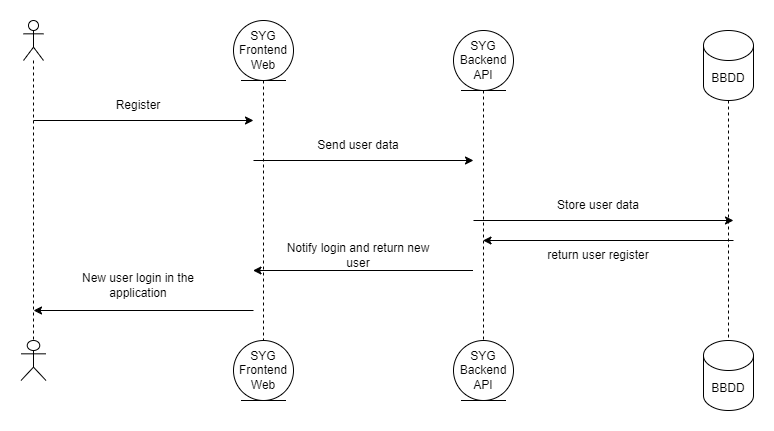
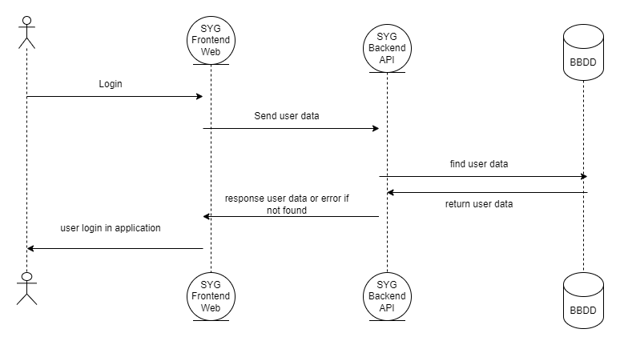
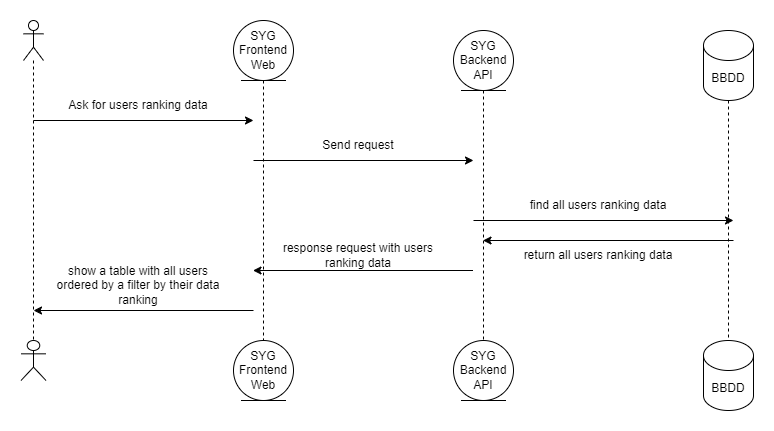
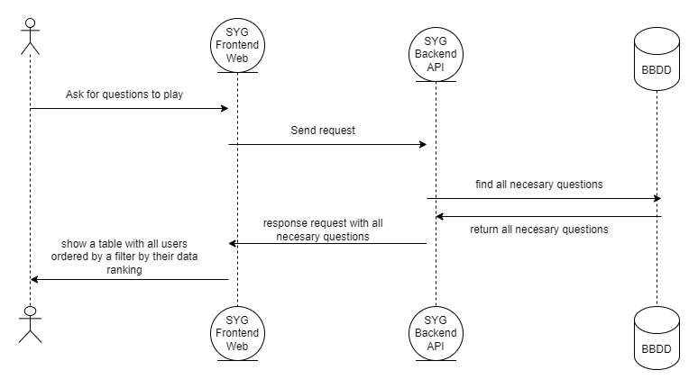

About arc42
arc42, the template for documentation of software and system architecture.
Template Version 8.2 EN. (based upon AsciiDoc version), January 2023
Created, maintained and © by Dr. Peter Hruschka, Dr. Gernot Starke and contributors. See https://arc42.org.
1. Introduction and Goals
1.1. Requirements Overview
1.2. Quality Goals
1.3. Stakeholders
2. Architecture Constraints
2.1. Technical constraints backend
Constraint |
Explanation |
Java |
Java is a high-level, object-oriented programming language known for its portability and widespread adoption in application development |
Maven |
Maven is a Java software project management tool that facilitates building, dependency management and reporting, promoting agile and standardised development practices |
SpringBoot |
Spring Boot is a Java application development framework that simplifies configuration and development through pre-defined conventions and auto-configuration features |
JPA |
A Java specification that provides a standard for mapping Java objects to relational databases |
2.2. Technical constraints frontend
Constraint |
Explanation |
React |
We will use the React Framework for the UI (User Interface) |
TypeScrypt |
TypeScript is the techonology used for the backend. Based on JavaScript is quite similar |
Node.js |
Based on JavaScript, is a backend technology wich allows us to execute our code |
MUI |
is a library of user interface components for React, based on Google’s Material Design, which offers a wide range of predefined elements for building web applications |
Sass |
It is a CSS preprocessor that extends its functionality by allowing the use of variables, rule nesting, mixins and other features |
2.3. Technical constraints git/deploy
Constraint |
Explanation |
Docker |
The application will be running in a Docker Host |
GitHub |
We will use GitHub to deploy the project and all the files related with it |
2.4. Organizational and political constraints
Constraint |
Explanation |
Team and meetings |
It is a course application. The development team consists of only one person, so that organisational decisions are decided and changed if necessary by that person. Being one person means a loss of opinions and experience, but a gain in agility |
Development |
The project has a very tight time to be finished. This means that our application will not be as developed as it could be |
2.5. Conventions
Constraint |
Explanation |
Aesthetic and ease of use |
The UI (User Interface) has to be aesthetic and easy to use. Both of them are very important criteria in our application, so all of our decisions need to have this in mind |
Documentation |
We will use Arc42 template to develop documentation |
TypeScript |
We will use TypeScript/JavaScript naming conventions |
3. System Scope and Context
| Entity | Input | Output |
|---|---|---|
User |
The user will interact with the application through a computer or other device. The user will see the frontend of the application and send requests to the backend |
The output is represented in many parts of the system, reaching almost every point in the system |
SYG Frontend web |
It is the system with which the user interacts, it receives the requests sent by the user through the interface |
It processes incoming web requests and receives the data through SYG’s backend API. Once it has the requested information, it displays it to the user through the interface |
SYG Backend API |
It is the API in charge of all the business logic, it interacts with the frontend, database and external APIs |
It is the API in charge of all the business logic, it interacts with the frontend to return the data of the received requests and with the database and external APIs to get the data needed for your requests. |
Database (MySQL) |
Queries, information requests |
Storaged and consistent data responding to the system needs |
3.1. Technical Context
Our application is divided into frontend (React with node.js), backend (restapi with maven), testing (e2e, integration and unit Test). In backend, we use a hexagonal architecture improving the security and performance of the website, with which we get an immutable domain for the rest of the components that can attach to this domain. The system is made with the idea of microservices in mind, using docker containers, for the deployment of these microservices used both in the project and in testing (e2e and integration test), for the unit tests Mock is used. On the frontend, the React framework is used along with typescript and MUI, together with its own styles in Sass. The database is using MySQL, although with an immutable domain it could support other databases.

| Technology | Explication |
|---|---|
MySQL |
Database used for accessing and modifying data at the request of the relevant restapi |
Keycloak |
Library for securing and authentication of the whole application |
React |
Technology used for the frontend integration of our application |
TypeScript |
Acompaña a react en la construccion del frontend, dando soprote y tipado a react |
SCSS |
A much more complete branch of CSS, used in the application’s design styles |
Grafana and Prometeus |
They are services used for monitoring the system. |
Postman |
It is used for testing the backend functionlity |
Docker |
Use to divide the application in multiple services (containers) based in the microservices idea. We have a container for each service (Frontend, Backend, Database, Keycloak, Grafana, Prometheus, e2e backend test, integration backend tests) |
Azure |
Is the platform used for the system deployment. It was chosen because of its extensive support and support for deployment through images, where you can make a record of these images, plus the school gives a certain amount of money for deployment through azure |
4. Solution Strategy
4.1. Technology decisions
The technologies we have decided to use for the development of the app are:
-
Node.js: JavaScript runtime environment that allows JavaScript code to run on the server, facilitating the development of scalable, high-performance web applications.
-
React: React is an open source JavaScript library used to build interactive and responsive user interfaces for web and mobile applications, enabling the creation of reusable components and efficient management of application state.
-
TypeScript: TypeScript is a superset of JavaScript, meaning that it contains all of the functionality of JavaScript and enables compile-time error detection and facilitates the development of more scalable and maintainable applications.
-
MUI: Library of user interface (UI) components for React
-
Sass: Is a CSS preprocessor that extends the functionality of the CSS language through features such as variables, nesting, mixins, inheritance, among others.
-
Jest: Jest is a delightful JavaScript Testing Framework with a focus on simplicity.
-
Cypress: End-to-end testing framework specifically designed for automated testing of web applications.
-
Maven: Software project management tool, mainly used for the construction and administration of projects developed in Java.
-
SpringBoot: Open source framework for creating Java applications.
-
JPA: Is a Java specification that provides a set of standards for mapping Java objects to tables in a relational database.
-
MYSQL: Is an open source relational database management system using the SQL language.
-
Mockito: Open source testing framework for Java that allows the creation of mocks to facilitate the writing of unit tests.
-
Prometheus: Prometheus is open source software, which gives us the ability to monitor API through a wide range of available tools. This data is stored together with a time instance, with which we manage to have a fairly accurate record of the events that occur in our system.
-
Grafana: Grafana is an open source software which allows analyze, consult, visualize, alert and explore the metrics, records and monitoring API. With this data we can make interesting graphs and visualizations.
-
GitHub: It is a version management system.
-
Docker: Facilitates the creation, deployment and execution of applications within containers.
-
Azure: Is a cloud services platform provided by Microsoft that offers a wide range of services, in this case it will be used for the deployment of the app.
-
Postman: Postman is an open source software which offers the necessary help to build, use and test APIs, making the steps easier.
4.2. Decisions about the top-level decomposition of the system
-
The frontend will use the Components and Containers design pattern (also known as Presentational and Container Components). Where we can highlight:
-
Presentational Components (or Views): These components are mainly in charge of presentation and have no business logic. Their function is to render the user interface and display data. These components are usually reusable and can receive data through props.
-
Containers (or Modules): Containers, also known as smart components, encapsulate business logic and presentation logic. They communicate with application state and pass data to presentational components through props. Containers handle events, make API calls and manage application state.
-
-
The backend uses the MVC (model, view, controller) pattern adapted to the hexagonal structure of the API.
4.3. Decisions to achieve quality goals
In order to try to achieve all the proposed quality objectives, a website with specific requirements that meet all the proposed requirements, both in terms of user comfort and security, must be created. The application must be simple, easy to understand and entertaining (as it is a game) that leaves a good taste in the user’s mouth and obviously, as it is a login application with some user data, it must be strongly secured and authenticated.
4.4. Organizational decisions
As there is only one person in charge of the organisation and development, little can be added in this section as he has the first and last word, however it is possible to highlight behaviours of good use of version control technologies, such as the use of branches in git, issues, assignments of these, etc.
5. Building Block View
5.1. Whitebox Overall System
We have one actor interacting with the application:
-
User: He is the player of our application, he registers, enters the application and can play and visualise historical results and other functionalities.
The application is represented as a whitebox with black boxes inside.
5.2. Black Box descriptions of Overall System
Name |
Responsability |
Views |
They are responsible for the logic and operation of the views with which the user interacts. |
Components |
Receives data from Model layer to represent it on the device. Is the layer wich interacts with actors (users and administrator) |
Controller |
Receives requests and manage the interactions between View layer and Model layer |
Model |
Defines the business model. Provides information to controllers to respond to the request they received. |
Adapter |
It communicates with the database to store or retrieve the data it needs. |
5.3. Building block view - Level 2
6. Runtime View
6.1. Register User

This runtime view shows the process of registering a user, going through SYQ web and Api to database, storing the data in the database.
6.2. Login User

This runtime view shows the login process of a user, going through SYQ web and Api to database, via the location stored in the database.
6.3. Login User
This runtime view shows the home screen, the syg app takes care of.
6.4. Visualise Historics
The user navigates to the history screen, where he will be able to visualize all his collected data of all his matches, for this the app makes one of the API to obtain the data of his games in database.
6.5. Visualise and action Ranking

The user navigates to the ranking screen, where he can visualise in a table all the measurable statistics in a ranking of all the users of the application, not only can he visualise them but he can also sort them by different parameters to visualise them in a different way
6.6. Visualise and play game

The user will navigate to the game page, where he/she will be able to choose questions to answer from all or a specific category through a dedicated interface.
7. Deployment View
7.1. Infrastructure Level 1
-
Motivation: This diagram helps to point out the different components that we will have to use and their dependencies. It helps us to visualise the deployment path for the system to work.
-
Quality and/or Performance Features: To improve the quality of the system we have used the best technologies at our disposal, trying to minimise waiting times for user requests.
-
Mapping of Building Blocks to Infrastructure:
7.2. Infrastructure Level 2
-
Motivation: This second diagram details the launching of the layers.
-
Quality and/or Performance Features: As we can see in the following image, we are going to use Azure to deploy the application, serving as a remote server. We will also use Docker to launch each part of the system.
-
Mapping of Building Blocks to Infrastructure:

8. Cross-cutting Concepts
8.1. Domain model
| Name | Description |
|---|---|
Player/User |
User who can register, login and play in te application. |
Question |
Questions that are part of the game |
Answer |
Answers to these questions |
Category |
Game categories for the different questions |
Wikidata |
Wikidata model for data extracted from Wikidata |
8.2. Persistence
The database that best suited this application was a relational database, although non-relational databases are gaining more and more strength, it is too much for what is needed. In addition to this, the JPA adapter is made for relational databases, although any database can be adapted to the domain, MySQL was chosen for its simplicity and adaptability.
8.3. User interface
The user interface is designed to offer all users an intuitive and familiar experience using the React framework combined with TypeScript. The website follows the usual standards for question-related websites, such as kahoot to make it more institutional and to have a model to build on. In terms of dependencies, we work with MUI for the components and Sass to give the application a defined style.
Screens at a high level:
image08_screen_game_1.png["Game 1"]
8.4. Internazionalization
The application will potentially deal with several people, so making it a multilingual application seems the best decision. This will allow us to reach a wider audience and make the application more accessible.
The languages chosen are:
-
Spain
-
English
-
Germany
-
France
8.5. Security
For security and authentication we have made use of the keycloak library, which by means of roles, scopes and various configurations can take care of automating this security.
8.6. Archiutecture and design patterns
8.6.1. Hexagonal architecture
the API is using hexagonal architecture in our app. We took this decision because it presents several advantadges.
The hexagonal architecture is an architectural pattern used in software design. It divides a system into different layers or regions with their own responsibility. In this way, it manages to decouple layers of our application, allowing them to evolve in isolation. In addition, having the system separated by responsibilities will facilitate reuse. The components are loosely-coupled and interchangeable, such as the application core, the database, the user interface, test scripts and interfaces with other systems.
Hexagonal architecture is an alternative to traditional layered architecture.
8.7. Testability
Applications should be strongly tested. We use user stories to make acceptance tests and unit test to test the rest of the application components and states during running process. We think this is the best way to be sure the project works correctly.
8.7.1. Postman
To test API code, Postman was used during the whole development of the work, to check if the requests were being carried out correctly. Postman is an application in which we can test requests and obtain a successfully respond or not.
8.7.2. Unit tests
Unit testing was carried out on both the backend and frontend using different technologies to test all the necessary components or modules. The use of Mock for the backend and the use of jest for the frontend.
8.7.3. Integration tests
The integration tests were carried out in test containers with a test database built in these test containers for the adapter layer. It does not make sense to do integration tests on another layer.
8.7.4. e2e tests
For the e2e tests as well as the unit tests and in order to test the application to the maximum, they were carried out both in the frontend with cypress and in the backend with test container again.
9. Architecture Decisions
Decision |
Details |
Advantages |
Hexagonal architecture |
At the beginning of the project I decided that the backend would be governed by a hexagonal architecture, this because of the great power that this type of structure has, allowing the use of microservices and the great decoupling that it has |
One of the advantages that we found is that this project is for the subject of Software Architecture, so adding a hexagonal architecture to the project gives it more strength. In addition, the intrinsic advantages of a hexagonal architecture, which are decoupling from the database, web and drivers, since the project does not care about the implementation of these, focus more on the application domain, decouple the layers of the backend, this leads to that it was easier for us to perform tests and modifications added. |
Design architecture |
We will use a hexagonal structure oriented MVC pattern for the API and the view-component model in the frontend |
The main advantage is that these are fairly well documented and easy to assemble. |
Database |
We chose MySQL to store all the information |
Familiar technology that does not leave the already known stablishment |
Mockito |
Used for unit testing |
big power to mock up data |
React |
Utilizamos los Hooks y funcionalidades de React en frontend, aprovechando sus utilidades porque es intuitivo |
Typescript |
Typescript was used to be able to type the variables in frontend |
That is its main advantage, that typing, that gives a lot of value to the code, avoiding a lot of errors. |
Internationalisation |
Internationalisation of documentation in English and the application in English and Spanish |
With this internationalisation we greatly improve accessibility |
Time can be a factor and internationalisation in two languages can be very time consuming. |
MUI |
MUI is used because of the facilities given by some of its components |
It´s a good friend of react. |
SCSS |
Used to make our application more beautiful and to make all pages elements stay in its positions. |
Is a known language if you know CSS. |
Seeding the database in Docker |
the database will be seed in the build of his image |
No need to worry about empty database deployments |
Azure |
The decision to use Azure was that the school give support to spend money in azure and because azure give support to docker containers and images. |
Save images and run containers in the same platform. |
10. Quality Requirements
10.1. Quality Scenarios
Quality goal |
Scenario |
User Priority |
Developer Priority |
Maintainability |
The app is built following architectural and coding architecture and design patterns in a way that simplifies the understanding of the code and the code itself, making it easy to make changes to the code. |
Low |
High |
Scalability |
The product must continue evolving without neglecting the other requirements, meaning it should not stagnate. However, for this project, once the delivery is completed, it would only represent an initial version for future developments |
Medium |
Medium |
Security |
Keycloak will be used as an external framewirk for backend and frontend security, as well as for user authentication |
High |
High |
Performance |
the app is able to respond quickly to different user requests |
High |
High |
Usability |
Users are able to navigate, play and visualise the different elements of the site in a comfortable, simple and easy way |
High |
Medium |
Reliability |
The application does not crash or crashes strangely |
High |
High |
11. Risks and Technical Debts
11.1. Technology Risks
This is the compilation of the identified risks ordered by priority that we must minimize or avoid.
| Technology | Risk |
|---|---|
JPA |
Integrating JPA into your database adapter and compatibility with different databases can be a big risk |
Keycloak |
Although it is a powerful security and authentication framework, integrating it into both the backend and the frontend can be challenging and risky |
Docker |
Using, building and deploying modules and services with docker carries a significant risk in terms of reliability and time |
Deployment |
A deployment is always problematic until it is automated, this process can take time to set up and configure, and this process is also problematic and costly and can be considered a risky process as well. I have also never used azure so the learning curve of deploying in azure and adding continuous integration in azure is growing. |
Grafana and Prometeus |
We have never used these tools to monitor a project and we need to adapt to them. A bit like with azure |
11.2. Team risks:
| Risk | Explanation |
|---|---|
Being just 1 member |
The difficulty in developing the entire architecture and functionality is infinitely greater for a single person than for a team of 5-7 people |
11.2.1. Minimize or avoid risks
| Risk | How to avoid or minimize |
|---|---|
Not knowing the technologies |
We seek information and practice using them. |
Being only 1 member |
Much more work to counter the lack of equipment. |
11.3. Technical debts
-
Authentication and security with keycloak is implemented, but in the deployment it was necessary to have keycloak with https so it is a problem, which although there is time, may not be solved due to the lack of official certificates. A self-signed certificate will be used just in case.
-
The internationalisation was carried out without problems, except for the internationalisation of the questions, as it involves translating them in the wikidata questions and answers search itself. Although it is not a problem to have to search for questions in 4 languages, there are categories that are very reduced even to a single question, so it is still up in the air.
-
Although multiple optional points of functionality were completed, I had intended to do almost all of them, but due to the short time available it was impossible.
-
I would like to improve the logout, as it redirects strangely to the home page for some unknown reason, but I won’t be able to look into it before the final delivery.
-
Even though the continuous integration of tests is set up and working, for the coverage label, it only picks up the one from the backend since it’s the last one analyzed and overrides the others. Although we’ll try to fix it before the final delivery, there may not be enough time.
12. Glossary
| Term | Definition |
|---|---|
SYG |
Name of the application developed for this project |
API |
Application Programming Interface. A set of routines and methods provided by a library for use by other software |
Backend |
Part of the application that implements the logical business and interacts with both the frontend and the database |
Maven |
Maven is a software project management tool primarily used for building and managing dependencies in Java projects |
SpringBoot |
Spring Boot is an open-source Java-based framework used for creating stand-alone, production-grade Spring-based applications effortlessly |
JPA |
Is a Java specification for managing relational data in applications using object-relational mapping (ORM) techniques |
Framework |
Software platform that provides a foundation and reusable components to facilitate the development of applications |
Frontend |
Frontend refers to the part of a software application or website that users interact with directly |
Node |
It is a server-side JavaScript runtime environment that allows developers to build scalable and high-performance network applications. |
MUI |
React component library |
SASS |
Sass is a preprocessor scripting language that is interpreted or compiled into Cascading Style Sheets (CSS). Sass allows for more efficient and maintainable CSS code |
Web application |
Tools that a user can use by accessing a web server |
Keycloak |
Keycloak is an open-source identity and access management solution. |
Continuous integration system |
The practice of making automatic integrations to a project in order to detect errors prematurely |
Efficiency |
Hability of working fast consuming the least amount of resources |
Integrity |
The hability of being in a consistent state |
Modifiability |
The hability of something to be modified easily |
Testability |
Hability of something to be tested as an experiment and make decisions with the obtained results |
Usability |
The hability of something to be easily used by the biggest part of users |
Privacy |
The right of not sharing information if the user decides so |
Open Source |
Software development model based on open collaboration |